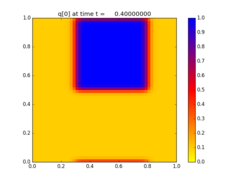
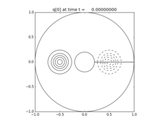
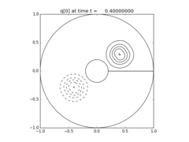
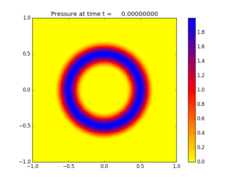
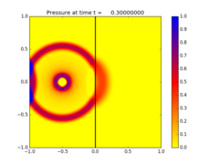
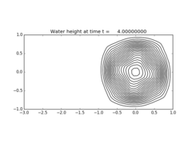

Gallery of 2d PyClaw applications¶
Contents
2-dimensional advection¶
Advecting square with periodic boundary conditions.
Source code ... Plots
2-dimensional variable-coefficient advection¶
Advection in an annular region.
Source code ... Plots
 2-dimensional acoustics¶
Expanding radial acoustic wave in a homogeneous medium.
Source code ... Plots
2-dimensional variable-coefficient acoustics¶
Expanding radial acoustic wave in a two-material medium with an interface.
Source code ... Plots
2-dimensional shallow water on the sphere¶
Wavenumber 4 Rossby-Haurwitz wave on a rotating sphere.
Source code ... Plots
